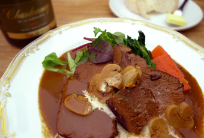
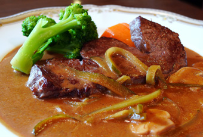
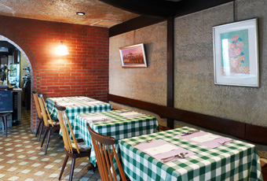

SHOP INFORMATIONみやけ亭
昔ながらの本格派洋食が味わえる

「倉敷本通り商店街」に佇む「みやけ亭」は、昭和52年創業以来、自家製の本格派洋食が味わえるお店として、リピーターの絶えないレストランです。瀬戸内海産の新鮮な魚介類や岡山県産の野菜、広島県産の和牛を使うなど、素材にこだわり、手間隙かけて丁寧に作られた料理ばかり。そんな魅力的な料理を気軽に味わえると評判のランチは、リーズナブルで女性に大人気です。
大人気の牛タンシチュー

岡山県井原で育てられた牛を使った「牛タンシチュー」は、創業以来変わらぬ味で、当時から人気が絶えないメニューです。赤ワインを使って丁寧に作られたデミグラスソースとともにじっくりと煮込んだ牛タンは、柔らかく口の中でとろける美味しさ。問い合わせがくるほどの人気メニューなので、ぜひ一度味わってみてください。
定番洋食もシェフの腕にかかれば絶品料理
グラタンといえば、誰からも愛され食卓でもよく登場する定番の洋食ですが、「みやけ亭」では、エビと貝柱を贅沢に使い、スープのようなサラっとした口当たりに仕上げたグラタンを味わうことができます。海の素材を優しく包み込むあっさりとした味わいで、他で食べるグラタンとはひと味もふた味も違った究極の一品です。肉料理は、広島の神石和牛を使った「ビーフストロガノフ みやけ亭風」や、骨付仔羊をタイム・セージ・ニンニクでじっくり焼いた「仔羊の香草焼き」など、どれも手の込んだものばかりです。
アットホームで落ち着く大人の空間

お店は倉敷駅から徒歩10分。周辺は「大原美術館」や「阿智神社」などの見所が多く、観光途中にも立ち寄りやすい立地です。煉瓦造りの壁や絵画で飾り付けされた店内は雰囲気が良く、少し暗めの照明が落ち着く空間を演出しています。家庭的でこじんまりとしているので、カジュアルに食事を楽しむことができます。テーブル席に加え、一人でも気軽に立ち寄れるカウンター席も用意。奥には4～8人までの個室も完備されているので、様々なシーンに利用できます。
Googleマップでみる
一覧に戻る